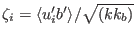
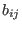
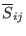
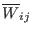
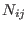
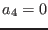
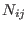
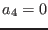

Next: Explicit models for vertical Up: The turbulence model Previous: Second-order models Contents
The key assumptions in deriving algebraic models have been formulated by Rodi (1976) and Gibson and Launder (1976). These authors suggested to simplify the right hand sides of (48) and (51) according to
Most authors proceed know in deriving, with the help of (60), a dimensionless equation for the normalised turbulent buoyancy flux, , see So et al. (2002), Jin et al. (2003). It can be shown, however, that the resulting algebraic equations alternatively can be expressed, without further assumptions, in the form of equations for the mixing efficiencies,
The new dimensionless quantities entering the problem via (65) are
(61) and (65) are linear in  and , with a non-linear coupling introduced by the terms
(61) and (65) are a system of 9 coupled algebraic
equations for the anisotropies and the mixing efficiencies
, depending solely on the non-dimensional tensors
,
, the vector
, and the scalar
 . This system is linear, if
. This system is linear, if  and
and
 are
treated as knowns and if the nonlinear term  in
(61) is neglected, . No closed solution of the complete
system in three dimensions has been reported so far in the
literature. Nevertheless, separate solutions in three dimensions for
(61) and (65), respectively, have been reported (see Jin et al. (2003)
and the references therein).
are
treated as knowns and if the nonlinear term  in
(61) is neglected, . No closed solution of the complete
system in three dimensions has been reported so far in the
literature. Nevertheless, separate solutions in three dimensions for
(61) and (65), respectively, have been reported (see Jin et al. (2003)
and the references therein).
In geophysical applications, the system (61) and (65) can be considerably simplified by assuming that the fluid is horizontally homogeneous (boundary layer approximation), and closed solutions can be obtained (see Cheng et al. (2002)). The procedure to obtain such solutions is discussed in the following subsection.
Karsten Bolding 2012-12-28